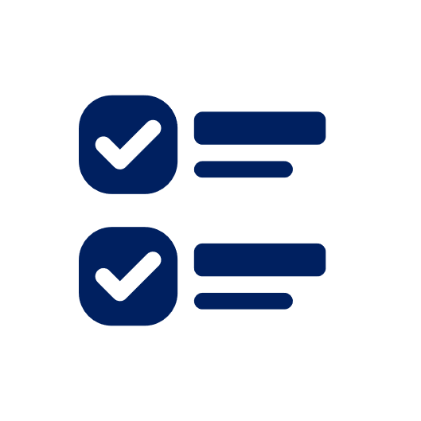
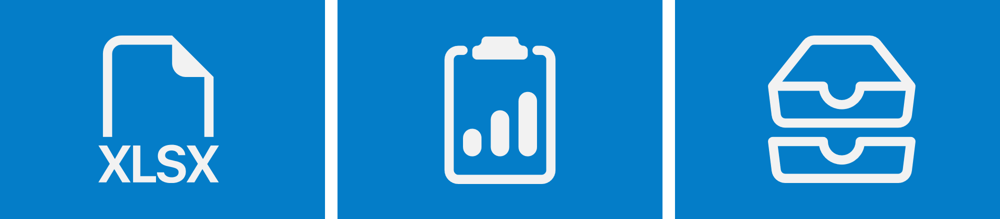

Gestão pública educacional baseada em evidências
A Gamarco trabalha pela assessoria e pela consultoria em gestão administrativa, financeira, organizacional e de políticas públicas em assuntos educacionais, incluindo planejamento estratégico, organização de processos, gestão de dados e de sistemas, elaboração e acompanhamento de projetos e assessoria em políticas educacionais para redes municipais de ensino. Além disso, realizamos capacitação, formação e treinamento profissional e gerencial para gestores públicos e profissionais da educação.
Prestar serviços de assessoria e de consultoria educacional voltados a gestores públicos municipais e a profissionais da educação, com foco na implementação e no fortalecimento de estratégias educacionais em rede, alinhadas às políticas municipais, estaduais e nacionais para o desenvolvimento da educação.
Ser referência na Região Metropolitana de Belo Horizonte pela excelência na assessoria e na consultoria educacional, contribuindo para a transformação da gestão pública municipal e da gestão escolar, com vistas ao desenvolvimento de redes de ensino alinhados aos princípios do Sistema Nacional de Educação (SNE).
Trabalhamos com base em metodologia científica e em análise de evidências, utilizando estudos comparados e dados educacionais em âmbito municipal, estadual e nacional. Desenvolvemos soluções por meio de uma abordagem inovadora e multidisciplinar, integrando educação, gestão pública e tecnologia.
Compromisso com a qualidade da educação pública municipal; valorização e desenvolvimento de gestores e de profissionais da educação; transparência e responsabilidade na gestão pública; defesa da gestão democrática do ensino público; foco em resultados educacionais concretos; e trabalho baseado em evidências e com rigor técnico.
Identificação das demandas com Diagnóstico Dinâmico de 5 Dimensões (DD5D) DD5D ? e Formulários, estudos de caso, entrevistas e outros necessários para o DD5D outras ferramentas ?
Definição de estratégias e de metas para o Documento com a previsão das ações que serão desenvolvidas, dos encaminhamentos, dos prazos, dos resultados, etc. Plano de Trabalho ?

Execução das ações propostas no Plano de Trabalho
Análise dos resultados, Instrumento que utilizada modelos algorítmicos de aprendizado de máquina e de dados para complementar a análise dos resultados Monitoramento 360º ? e ajustes

Atuação e colaboração com instituições de referência em Minas Gerais, incluindo UFMG, UEMG e PUC Minas, além de diálogo com redes públicas, prefeituras, autarquias e organizações educacionais públicas e privadas.
Articulação com profissionais da educação, gestores públicos e especialistas em políticas educacionais, fortalecendo a troca de experiências e a construção de soluções estratégicas em diversos setores.
Experiência em formação para profissionais da educação, avaliação da aprendizagem, apoio à gestão pública educacional e ao desenvolvimento de iniciativas voltadas ao planejamento, ao acompanhamento e à avaliação de políticas públicas.